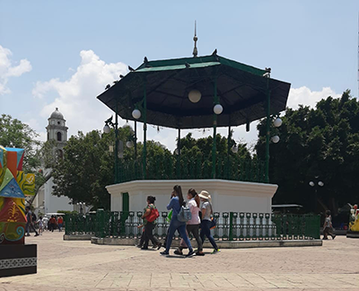

My drawing of a flying planetarium is the perfect example of my fictional productions. I got the idea to draw this from a random word generator. The two words that I based this drawing on were ship and planetarium. The planetarium has part modern aesthetic and part garden aesthetic. I have a deep fascination with the fantasy genre and though this drawing is unfinished, I still think this is my favorite one.
This drawing fits into the larger collection because they're all my digital illustrations. More specifically, this drawing fits in with the fantasy portion of my drawings. Most of the drawings in my collection are inspired by dreams I've had. So in a way, these drawings represent the subconscious portion of my mind. Along with the fantasy drawings I have landscape drawings. Much of these or unfinished because I can never seem to figure out what the final touch should be.
Part 2

Annette Campos Carrillo
The image seems to be about a place in the world that means something to the photographer. Something that I find interesting about this photo is the art installations on the left and right of the image. That leads me to think that this place must be popular enough to attract skilled artists. What strikes me as interesting is that there are kids in a few places in the photo which means that this place could be an entertainment location. The gazebo in the center of the photo is the most mysterious aspect to me. The bottom part looks big enough for someone to fit inside of, so I'm wondering what's inside.
Albert Kahn's International Photo Album
Albert Kahn's website is a great example of an atypical photo album. What I appreciate about this website is that almost every action a user takes is accompanied by a crisp animation. The hover states that belong with each element are essential to the user experience because they help the user clearly understand what they can click and what they can't click. His website documents many photos that belong to an overarching theme. These themes can be toggled in the navbar at the bottom of the page. When a specific theme is selected, it updates the page with new content.
The most impressive feature of this digital album is the 'World' button in the top left corner. When the user clicks on it, they are transported to a new page where they can select a specific country whose photos they want to see. Albert Kahn has even organized it by continent and shape of the country. The usability of this website is unmatched when it comes to complex photo album websites. His visual hierarchy is superior to most websites I've come across.
Best Practices for Modals / Overlays / Dialog Windows
After reading Naema's article, it's clear that when overlays are used too much or in unwarranted circumstances they will elicit a negative emotion from users. Due to years of conditioning, web users are inclined to disregard overlay/popup windows because they are associated with ads and viruses. That being said, there is a way to use modals, overlays, and dialog windows in a way that won't disrupt the user experience.
Perhaps the most important aspect of an overlay is a descriptive title. This will inform the user of the content and ensure that they won't immediately disregard the content. And only use overlays if you have something important to say! Also having interactive buttons such as an X button or any button within context will help the user navigate to their desired location.
It's also important the users initiate the pop-up window because they will think that it is too much of a surprise or too invasive. Humans are scared creatures and it won't take them long to realize that they don't like something. They may never come back to a website because of one silly or mistimed interaction.
Best Practices for Form Design
The article Best Practices for Form Design by Salim Ansari provides insightful pointers in creating a user-friendly digital form. Number three on Salim's list is creating multiple steps for the user. This one stood out to me because it isn't something that I have thought about before. Giving the user checkpoints in a form will help them feel progress. I think creating multiple steps is crucial for long forms because users are generally intimidated by long forms. Breaking down the content of the form will ultimately help the user digest all the information with minimal cognitive load.
There is a lot more psychology behind forms than I had initially thought. For example, if you want the user to complete a form you want to give them easier information first. This will help the user gain momentum and eventually commit themselves to finish it. Forms can be intimidating, so allowing the user to start the form with easier questions first will go a long way.
The final and perhaps the most important addition to forms is readability. Allowing the user to adjust the text size to something more suitable will help them comfortably complete a form. This irons out some of the accessibility issues people might have, such as visual impairment. For forms to be useful, they need to be suitable for every sort of person. Taking into account accessibility issues will ultimately help researchers gather more accurate data.
Click here for a great example of a form. This form takes the user through a low cognitive load interface that will ultimately lead them to their desired destination.